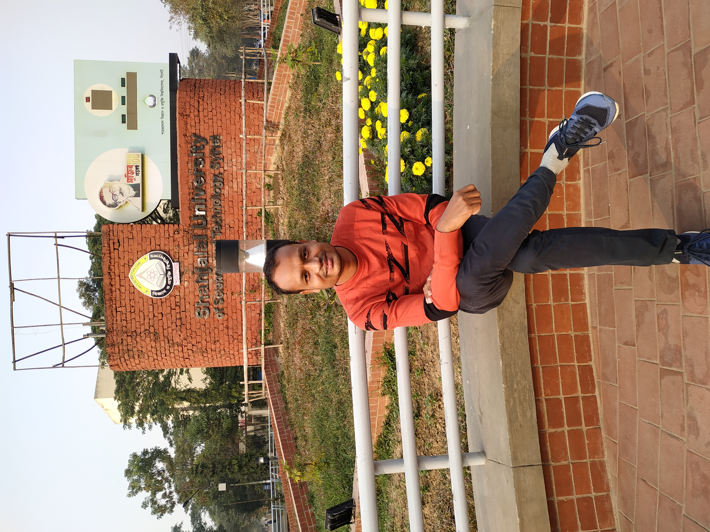
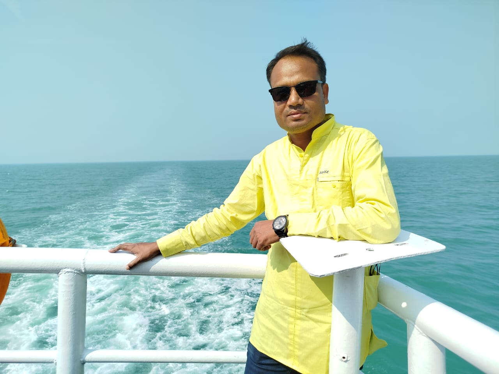
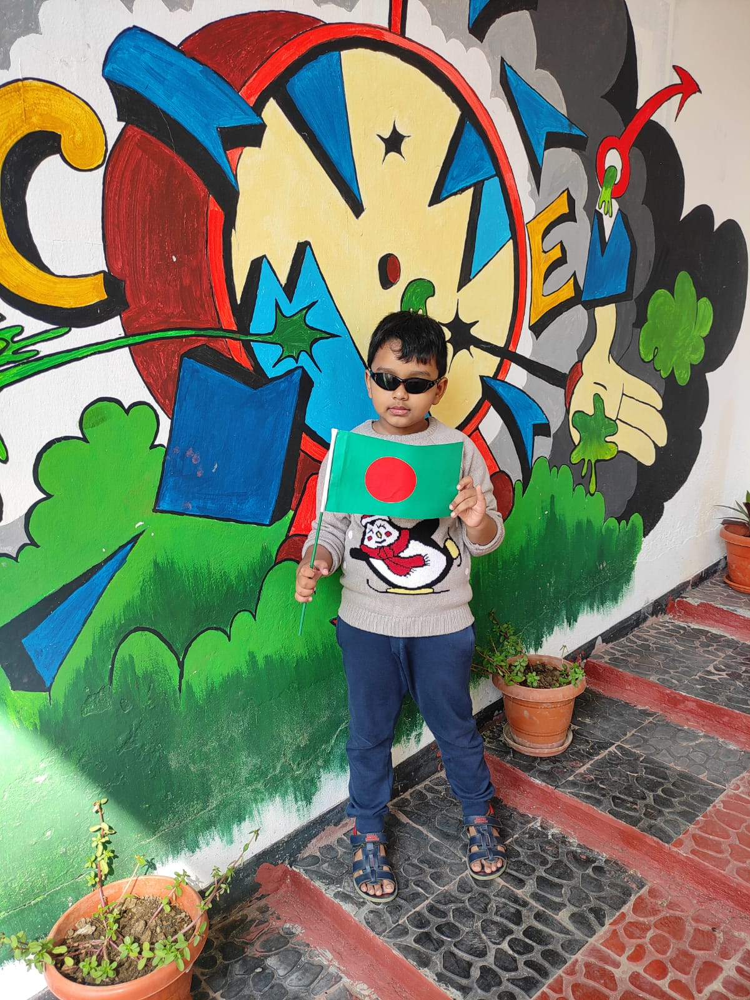
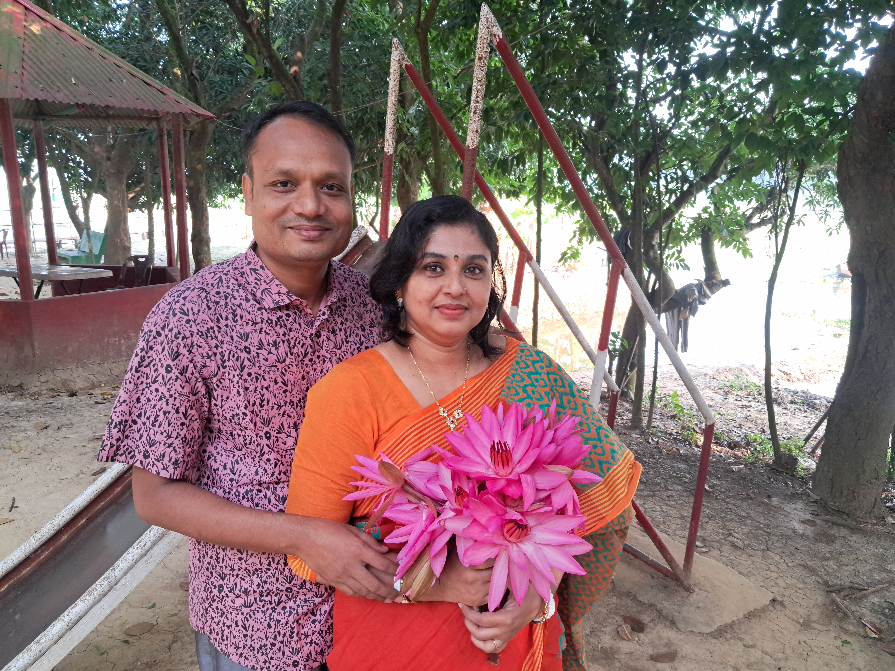
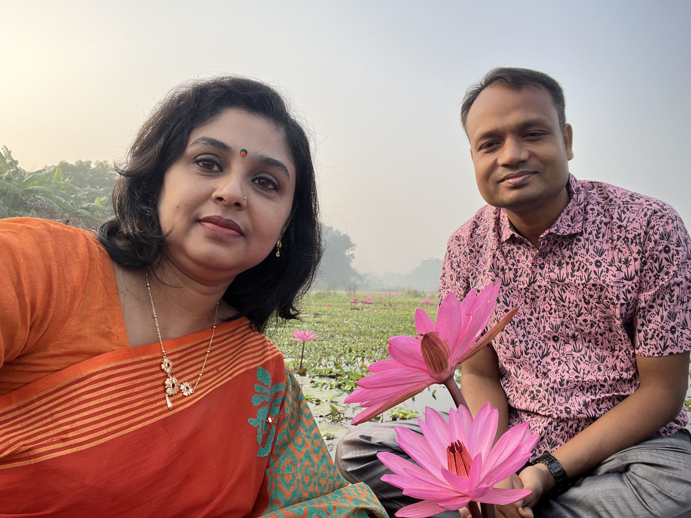
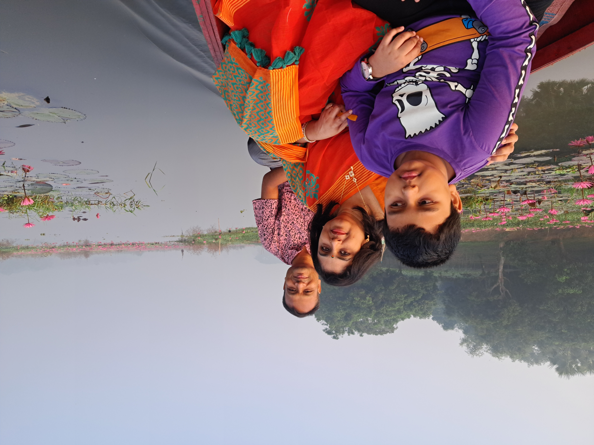
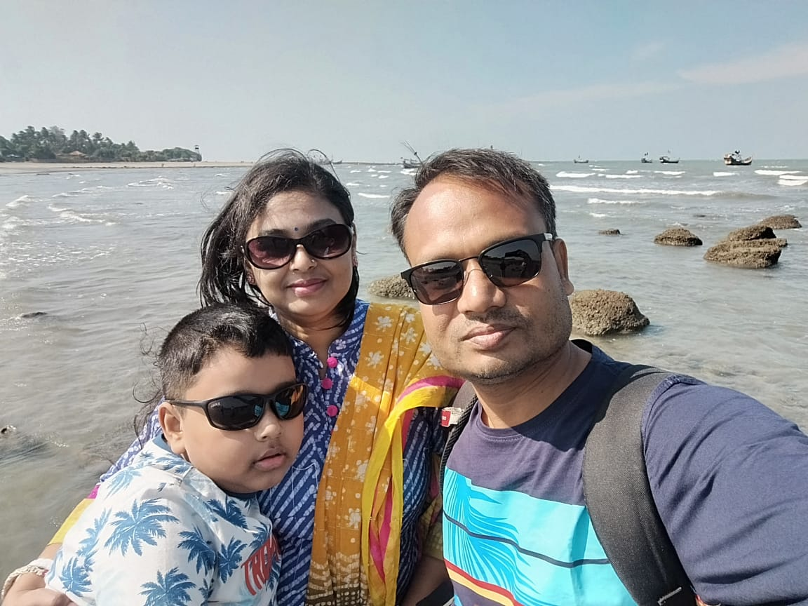
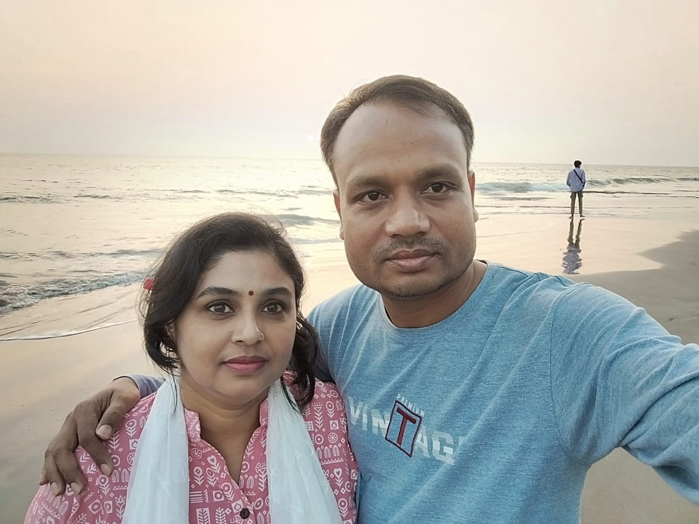
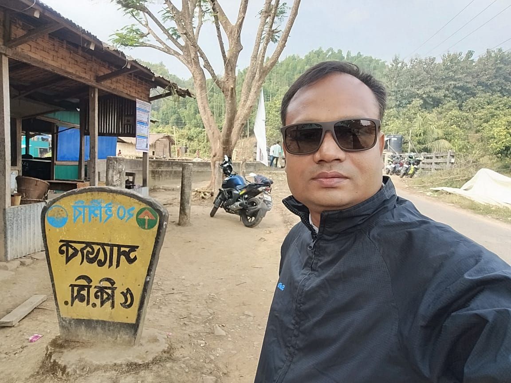

About Me
Welcome to my academic portal. I serve as a dedicated faculty member at Sylhet Agricultural University. My instructional duties and empirical studies focus closely on pioneering environmental dynamics, regional crop optimizations, and technical agricultural transformations throughout Bangladesh.
Educational Background
My academic investigation explores sustainable paradigms and field deployments targeting ecological resilience:
- Climate-Resilient Smart Agriculture & Cultivation Frameworks
- Wetland Hydrology & Crop Management in North-Eastern Ecosystems
- Decentralized IoT Data Arrays and Automation in Precision Farming
Ongoing Projects
Explainable AI and Data-Driven Assessment of Climate Change Effects on Yield Production in Bangladesh: A Blending Approach of Remote Sensing and Machine Learning
This study adopts an integrated remote sensing and machine learning framework to assess the impacts of climate change on rice yield production in Bangladesh over a 30-year period.
Completed Projects
Implementation of real-time water quality monitoring and control system for precision aquaculture: Intelligent IoT and machine learning based approaches toward 4th agricultural revolution
Evaluated automated sensor array data across diverse farming locations to map local microclimatic trends and crop vulnerabilities over a year experimental framework.
BD-Freshwater-Fish: A Large-scale Digital Database of Freshwater Fish from Bangladesh for AI based Automatic Fish Species Identification and Detection
Evaluated automated sensor array data across diverse farming locations to map local microclimatic trends and crop vulnerabilities over a two-year experimental framework.
Design and Development of a mobile application for SAU on the android platform
Evaluated automated sensor array data across diverse farming locations to map local microclimatic trends and crop vulnerabilities over a two-year experimental framework.
Educational Background
My academic investigation explores sustainable paradigms and field deployments targeting ecological resilience:
- Climate-Resilient Smart Agriculture & Cultivation Frameworks
- Wetland Hydrology & Crop Management in North-Eastern Ecosystems
- Decentralized IoT Data Arrays and Automation in Precision Farming
"Advancements in Flood-Resilient Crop Yields in Sylhet Division"
Journal of Agricultural Science, 2026.
"Evaluating Local Soil Microclimates Using Automated Sensor Arrays"
International Agronomy Review, 2025.
Leisure & Activities
How I recharge, stay inspired, and spend my time outside of academic research and teaching.
Photography & Visual Storytelling
Capturing local ecosystems, landscapes, and rural campus environments. It helps in developing alternative visual perspectives that complement remote sensing insights.



Tech & Sci-Fi Literature
Exploring foundational literature on computing trends, historical scientific biographies, and technological forecasting during personal downtime.


Nature Exploration
During my vacation, I love to explore the stunning natural beauty of Bangladesh, featuring rolling tea gardens, majestic hills, and the world's longest natural sea beach.





